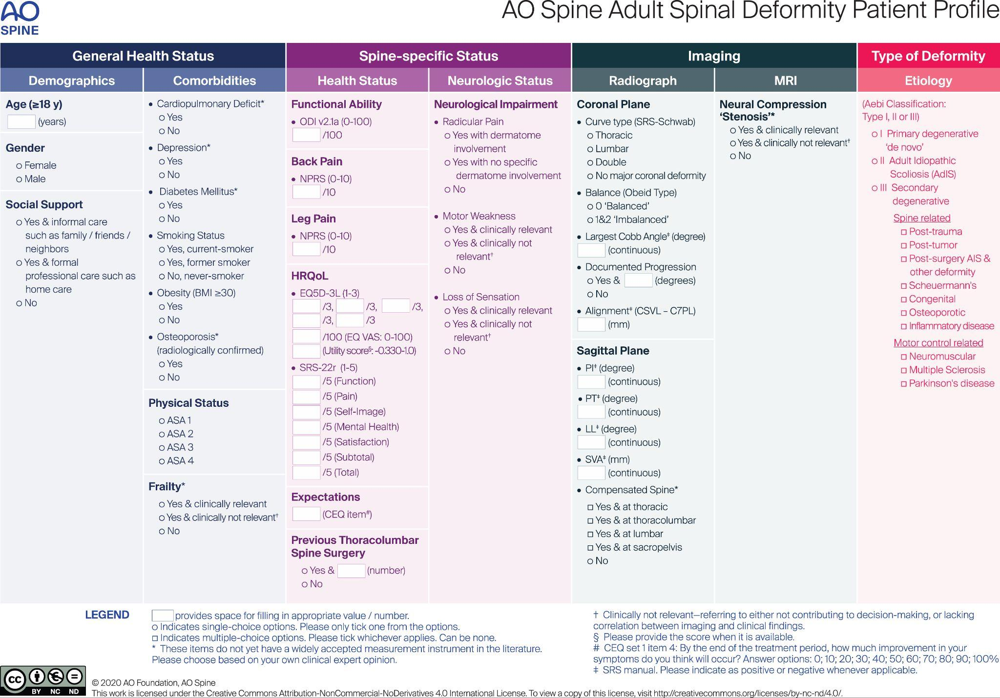

Adapted from: Naresh-Babu J, Kwan KYH, Wu Y, et al; AO Spine Knowledge Forum Deformity. AO Spine Adult Spinal Deformity Patient Profile: A Paradigm Shift in Comprehensive Patient Evaluation in Order to Optimize Treatment and Improve Patient Care. Global Spine J. 2023 Jul;13(6):1490-1501. doi: 10.1177/21925682211037935.
PERMISSIONS REQUIRED
1) Description of Measurement
The AO Spine Adult Spinal Deformity (ASD) Profile is a consensus-derived, multimodal framework intended to holistically describe adult spinal deformity beyond radiographs alone. Rather than functioning as a purely morphologic curve-type system, it categorizes patients across four major domains:
General Health Status – demographics, frailty, comorbidities, social support.
Spine-Specific Health – pain, disability, neurologic impairment.
Imaging – coronal and sagittal alignment parameters and MRI-based neural compression.
Type of Deformity (Etiology) – deformity pattern and pathophysiology.
The classification emphasizes:
Deformity Type & Location (thoracic, thoracolumbar, lumbar; primary vs secondary degenerative vs idiopathic origin).
Neurologic Impact, distinguishing radiographic compression from clinically relevant deficits (radicular pain, motor weakness, sensory loss).
Integration of coronal and sagittal plane deformity with compensatory mechanisms.
2) Instructions to Measure
A. Radiographic Assessment (Standing PA & Lateral X-ray)
Identify deformity location:
Thoracic (T2–T11)
Thoracolumbar (T12–L1)
Lumbar (L2–L4)
Determine coronal curve type and magnitude:
Measure major Cobb angle (°).
Record coronal balance using C7 plumb line (cm).
Measure sagittal parameters:
Sagittal Vertical Axis (SVA, cm)
Pelvic Incidence (PI, °)
Pelvic Tilt (PT, °)
Lumbar Lordosis (LL, °)
Note presence of compensated spine (thoracic, thoracolumbar, lumbar, pelvic).
Identify etiologic deformity type (Aebi-based):
Type I – Primary degenerative (“de novo”).
Type II – Adult idiopathic scoliosis (AdIS).
Type III – Secondary degenerative (spine-related or neuromuscular).
B. Neurologic Assessment (MRI)
Evaluate for neural compression (central canal stenosis, foraminal stenosis).
Document clinical relevance:
Radicular pain: yes/no, dermatomal vs non-specific.
Motor weakness: yes/no; clinically relevant or not.
Sensory loss: yes/no; clinically relevant or not.
3) Normal vs. Pathologic Ranges
Coronal Cobb angle: <10° (normal); ≥ 10° (scoliosis)
Sagittal Vertical Axis (SVA): < 4 cm (normal); ≥ 5 cm positive sagittal imbalance
Pelvic Tilt (PT): < 20° (normal); ≥ 25° (pelvic compensation)
PI-LL mismatch: < 10° (normal); ≥ 10-20° (mismatch)
Neural compression: Absent (normal); central/foraminal stenosis (pathologic)
Neurological deficit: None (normal); radicular pain, weakness, sensory loss, (clinically relevant)
4) Important References
Naresh-Babu J, Kwan KYH, Wu Y, et al; AO Spine Knowledge Forum Deformity. AO Spine Adult Spinal Deformity Patient Profile: A Paradigm Shift in Comprehensive Patient Evaluation in Order to Optimize Treatment and Improve Patient Care. Global Spine J. 2023 Jul;13(6):1490-1501. doi: 10.1177/21925682211037935.
Schwab F, Ungar B, Blondel B, et al. Scoliosis Research Society-Schwab adult spinal deformity classification: a validation study. Spine (Phila Pa 1976). 2012 May 20;37(12):1077-82. doi: 10.1097/BRS.0b013e31823e15e2.
Aebi M. The adult scoliosis. Eur Spine J. 2005 Dec;14(10):925-48. doi: 10.1007/s00586-005-1053-9.
5) Other info....
This AO Spine system is not a treatment-directive algorithm, but a structured patient profiling framework integrating deformity morphology with neurologic and health-status drivers.
Neurologic impairment is recorded using clinical relevance rather than imaging severity alone.
Deformity etiology strongly influences management strategy:
Type I (de novo degenerative) – often short-segment pathology with significant stenosis.
Type II (AdIS) – large structural curves with coronal and sagittal imbalance.
Type III (secondary) – post-traumatic, iatrogenic, or neuromuscular causes with complex compensation.
This system provides a foundation for consistent ASD documentation and facilitates development of future outcome-driven, data-adaptive classifications.